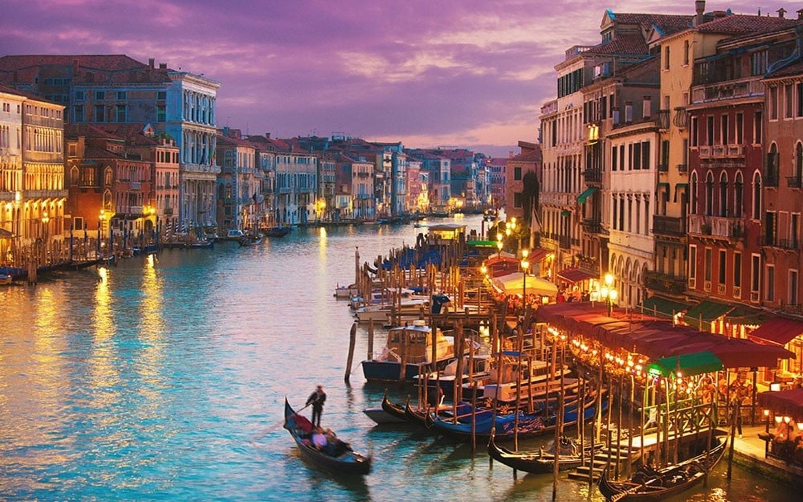

POPULAR DESTINATIONS
Rome

Florence
Milan
Postiano
Capri

Tuscany
Venice
Sicily
ROME
Rome, Italy's capital, is a sprawling, cosmopolitatn city with nearly 3000 years of globally influential art, architecture and culture on display. Once the capital of an ancient republic and empire whose armies and polity defined the Western world in antiquity and left seemingly indelible imprints thereafter, the spiritual and physical seat of the Roman Catholic Church, and the site of major pinnacles of artistic and intellectual achievement, Rome is the Eternal City, remaining today a political capital, a religious centre, and a memorial to the creative imagination of the past.
Tourist Attractions
Colosseum
St. Peter's Basilica
Trevi Fountain
Pantheon
Roman Forum
Spanish Steps
Sistine Chapel


The Colosseum, one of Rome's most popular tourist attractions, is an iconic symbol of Imperial Rome. Completed in AD 80, the ampitheatre was used for gladiatorial contests and public spectabcles, animal hunts, exectutions, re-enactments of famous battles, and dramas based on classical mythology. The builidng ceasted to be used for entertainment purposes in the early medieval era, but the popularity of the Colosseum has only increased over time. The Colosseum is listed as one of the New 7 Wonders of the World and was the most popular tourist attraction in 2018.
Papal Basilica of St. Peter in the Vatican, or more commonly known just as St. Peter's Basilica, is an Italian Renaissance church in the Vatican City. Designed by Donato Bramante, Michelangelo, Carlo Maderno and Gian Lorenzo Bernini, St. Peter's is the most renowned work of Renaissance architecture and is the largest church in the world and is regarded as one of th eholiest Catholic Shrines.
The Trevi Fountain, located in the Tevi district of Rome, is one of the most famous foutains in the world. Despite its outstanding size, standing 86 feet high and 161 feet wide, the fountain is most famous for its appearance in notable films such as Roman Holiday, Three Coins in the Fountain, and The Lizzie McGuire Movie. Popularized by the movie Three Coins in the Fountain, tourists throw coins into the fountain, with their right hand over the left shoulder, for good luck. It is estimated that 3000 euros are thrown into the fountain each day, and all of this money is used to subsidize a supermarket for Rome's needy.
The Pantheon is a former Roman temple which is now used as a church. The name Pantheon means "relating to, or common to all the gods," and it is believed to have this name either becasue of the statues of gods placed around the building, or from the resemblance of the dome to the heavens. It is one of the best-preserved of all Ancient Roman buildings, mostly because it has been in continuous use throughout its history, dating back to to 125 AD (for the current building). The building is cylindrical in shape with a portico of 12 large granite Corinthian columns. The Pantheon's dome is the worl's largest unreinforced concrete dome, even 2000 years after it was errected.
The Roman Forum, also known in latin as Forum Romanum, is a rectangular forum or plaze surrounded by the ruins of several ancient government buildings a the center of the city of Rome. The Forum was the center of day-to-day life in Rome for centuries. The site was used for triumphal processions and elections, public speeches, criminal trials, and commercial affairs. Once the most celebrated meeting place in the world, today the Forum is a sprawling ruin of architectural fragments and intermittend archaeological excavations, which attract nearly 5 million tourists per year.
The Spanish Steps, opened in 1725, was funded by the French diplomat Etienne Gueffier bequeathed. The monumental stairway of 174 steps were built in order to link the Trinita dei Monti church that was under the patrongage of the king of France, with the Spanish square below. At the bottom of the Steps is the Piazza di Spagna, which is one of the most famous squares in Rome.
The Sistine Chapel is the official residence of the Pope in the Vatican City. The Chapel is most famous for the frescos or paintings that decorate the building. One of the most famous of the frescos is The Last Judgement, which is was painted on the ceiling of the Chapel by Michelangelo. The piece is regarded as one of the major artistic accomplishments of human civilization.
FLORENCE
Florence, capital of Italy’s Tuscany region, is home to many masterpieces of Renaissance art and architecture. One of its most iconic sights is the Duomo, a cathedral with a terracotta-tiled dome engineered by Brunelleschi and a bell tower by Giotto. The Galleria dell'Accademia displays Michelangelo’s “David” sculpture. The Uffizi Gallery exhibits Botticelli’s “The Birth of Venus” and da Vinci’s “Annunciation.”
When traveling abroad it is easy to hit up all the typical tourist destinations, the ones that you think of when imagining a city. When thinking of Florence people tend to thing of the historic part of the city, full of museums, palaces, and churches. While these places are home to some of the greatest artistic treasures in the world, it is possible to capture the more authentic side of Florence, just by crossing the Arno River. Learn more about the "Diladdarno" district to expereince all that Florence has to offer! Off the Beaten Path
Ponte Vecchio
The Ponte Vecchio or "Old Bridge" is a medieval stone closed-spandrel segmental arch bridge over the Arno River. Notably, this bridge still has shops built along it, as was once common place. Butchers initially occupied the shops; however the present tenants are jewelers, art dealers and souvenir sellers. The Ponte Vecchio was the only bridge across the Arno River in Florence until 1218.

Palazzo Pitti
Palazzo Pitti, or sometimes referred to as Pitti Palace in English, is a Renaissance palace in Florence situated on the South side of the Arno River, close to Ponte Vecchio. Throughout time the use of the palace has changed as new owners took control, however now the palazzo is the largest museum complex in Florene. The main attraction of Palazzo Pitti is the Palatine Gallery, containing over 500 Renaissance paintings which were once part of the Medici's private collection.

Piazza Santo Spirito
Piazza Santo Spirito, or the Plaza of Santo Spirito, is filled with markets, galleries, boutiques, and artisans. While the daytime is full of activity from locals and vistors of all ages, the Plaza truly comes to life at the night. Once the daytime vendors close, the restaurants, cafes and nightclubs beging to open. Many of these places have terraces or patios outside where people can sit and drink, each restraunt with varying levels of formality.
Corsi Annalena Gardens
Laid out in terraces overlooking the Via dei Serragli, the Corsi Annalena Gardens offer a panormaic view of the coutryside around Florence, extending form the urban fabric of the city in tot he rolling hills beyond. One secret of the gardens is an underground passageway linking the garden ot the BoBoli and to the Parco dei Torrigiani, granting access from Palazzo Pitti to the countryside beyond the city walls.